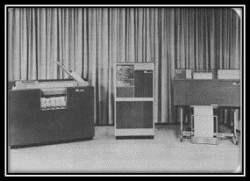
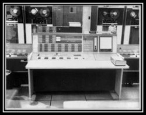

")
")
")
")
Az operációs rendszerek evolúciója
Néhány szóban tekintsük át a számítógépes generációk történetét, hiszen az operációs rendszerek együtt fejlődtek a számítógépekkel. Ennek a témának a bővebb kifejtése a Számítógépes Alapismeretek I tananyagban olvasható.
A nulladik generáció (-1942)
Az első, a valóságban soha el nem készült digitális számítógépet Charles Babbage (1792–1871) tervezte. A tervek szerint a gépet fogaskerekekből építették volna fel, gőzgép működtette volna és lyukkártyákat használtak volna a vezérléshez. Megvalósítás közben egy újabb terv született, de azt sem sikerült megvalósítani. A gép működtetéséhez Ada Lovelace, egy matematikában járatos hölgy programokat készített (egyesek szerint csak kommentálta Babbage munkáit) – emiatt sokan őt tekintik az első programozónak.
Az 1942-ig tartó időszakban születtek különböző kezdetleges és megbízhatatlan elektromechanikus gépek, amelyek azonban sok tekintetben megalapozták a mai gépek működési elveit. Feltétlenül meg kell említeni Zuse és Neumann János nevét, akik meghatározó alakjai már ennek a korszaknak is.
Ekkor még a programozás nagyon kezdetleges volt, operációs rendszer pedig nem volt.
Az első generáció (1942-1954)
1942-től 1954-ig tartó korszakot nevezzük az első generációnak. A számítógépek tisztán elektronikus működésűek, de a gyakran meghibásodó elektroncsövek felhasználása miatt az igen nagy méret és a megbízhatatlan működés jellemezte őket. Általában matematikusok, fizikusok, mérnökök munkája volt a tervezésük, építésük, sőt a működtetésük is.
Ebben a korszakban jelentőset alkotó tudósok: John Vincent Atanasoff, Clifford Berry, H. Aiken, Neuman, Eckert, Mauchly és Zuse.
A második generáció (1954-1964)
Ennek a korszaknak az egyik legjelentősebb újdonsága, a tranzisztorok megjelenése. Az új technikai lehetőségek miatt a gépek kisebbek, működésük megbízhatóbb lett, így egyre több helyen vették használatba őket, főleg matematikai számítások elvégzésére. A programok nagy részét főleg Fortran nyelven írták. Új szakmacsoportok alakultak ki: tervezők-építők, operátorok, programozók. A gép működtetése lyukkártyákkal történt, kötegelt módon. Miután megjelent a lyukkártya, mint beviteli lehetőség, megjelent az ezt működtető első, kezdetleges operációs rendszer is. Az 1950-es évek végére megjelentek a linkerek, futtatórendszerek, amelyeket szintén az operációs rendszernek kellett működtetni. Megjelent a mai operációs rendszer ősének tekinthető Monitor, ami egy, a memóriában tartózkodó (memóriarezidens) program volt.
Nevezetesebb számítógépek:
- IBM 1401 (1959): előkészítő és nyomtatógép. IBM 1401 (1959): előkészítő és nyomtatógépként alkalmazták.(A kép a wikipedia-ból származik)
- IBM 7094 (1962): számítást elvégző, feldolgozó gép. IBM 7094 (1962): számítást elvégző feldolgozó gép (A kép a wikipedia-ból származik)
- PDP 5 (1963) PDP 5 (1963) DEC (Digital Equipment Corporation): az első mikroszámítógép volt.(A kép a wikipedia-ból származik)